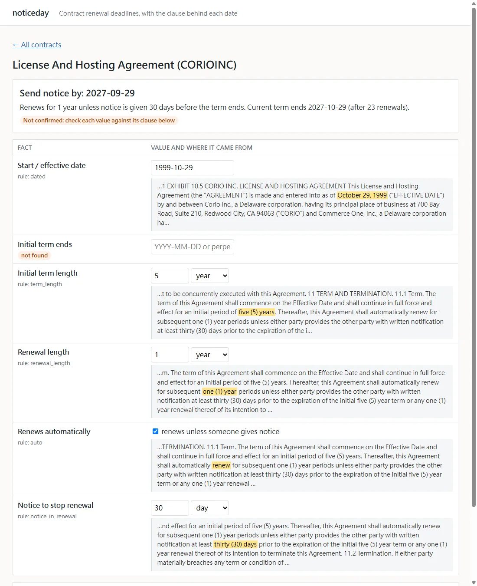

Situation
Small businesses sign waste-collection, lease and software contracts that renew unless notice is sent in time. Nobody tracks the notice date, the window closes, and the business is locked in for another year.
Service contracts renew by themselves unless someone sends notice 30 to 180 days before the term ends. noticeday reads the contract, shows the clause behind each date, and puts a deadline on the calendar only once a person confirms it.
test contracts where lawyers recorded a notice period, read right by the rules, none wrong, with 2 false alarms. The test split is 102 real contracts from SEC filings (CUAD).
Limit: the end date is right in 26 of 59 test contracts by the rules alone, so the send-notice-by date is right in only 3 of 10. The test split has been run seven times.
Open the repository
Small businesses sign waste-collection, lease and software contracts that renew unless notice is sent in time. Nobody tracks the notice date, the window closes, and the business is locked in for another year.
A wrong deadline is worse than none. The labelled data, CUAD, is large-company SEC exhibits rather than a café’s photocopier lease, and few test contracts carry a notice period at all.
Rules read the start date, term, renewal and notice period, each shown beside the words it came from. An optional local model reads each upload as a second reader, and only confirmed deadlines reach the calendar.
Notice periods right in 11 of 13 test contracts, none wrong, 2 false alarms. The calendar file holds only confirmed deadlines, each with a reminder 14 days before.
Constraints: no API, public lawyer-annotated data (CUAD, CC BY 4.0), a 102-contract test split.
The local model’s value is kept only when its quote is in the contract and the value can be parsed back out of that quote. On dev the gate dropped values the model had computed or restated. The cost: some correct values are dropped too, shown as “not found” for a person to fill in.
Work on start dates took the dev split from 260 to 281 of 340 right, but on test the rules lost one correct end date. The gain did not carry over, and the test errors were left unstudied, so the test split would not steer the rules.

Python. The second reader needs the Qwen3-4B-Instruct-2507 weights and about 8 GB of RAM. An MCP server lets Claude list deadlines; it has no write tools, so confirming stays in the web app.
docs/results/test-*.md, written by scripts/evaluate.py --split test, with raw counts, wrong values and false alarms per field.
$ uv venv && uv pip install -e . pytest httpx $ pytest -q # 41 tests (4 need '.[mcp]') $ python scripts/seed_demo.py demo.db # needs data/cuad; or upload your own $ NOTICEDAY_DB=demo.db uvicorn noticeday.app:app --port 8830 $ python scripts/prepare_cuad.py $ python scripts/evaluate.py --split test --method rules